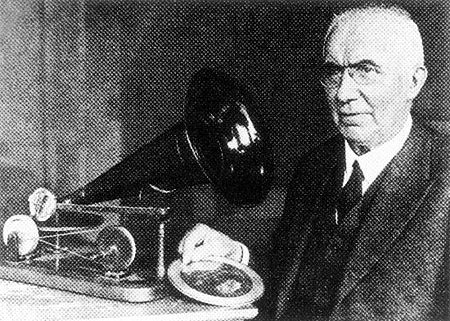
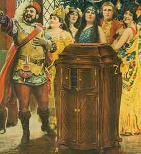
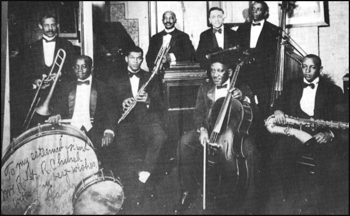
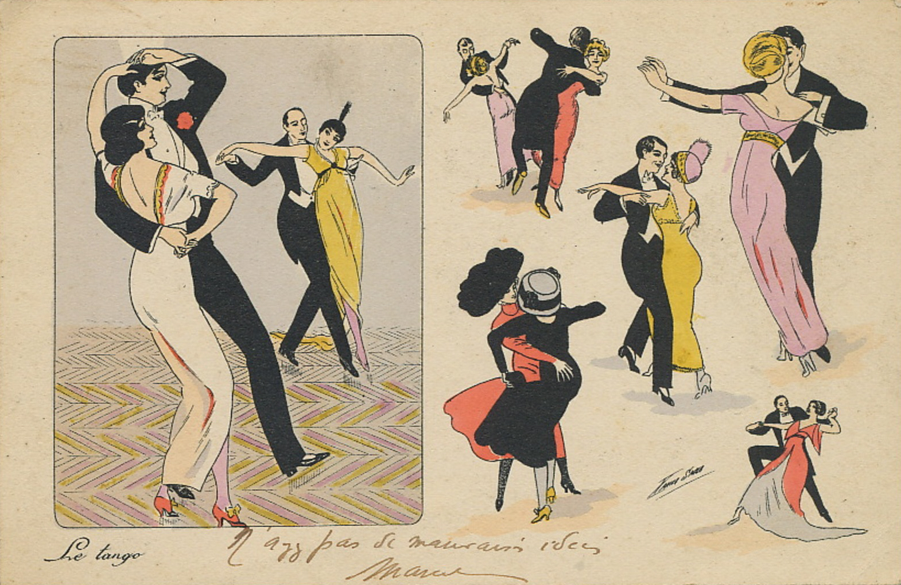
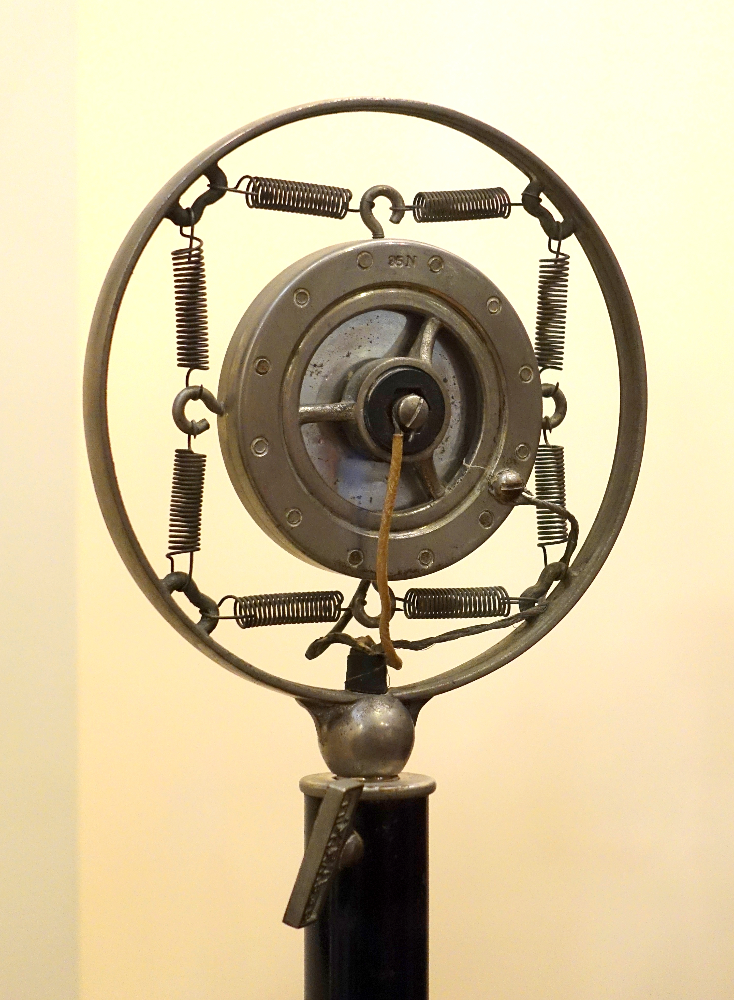
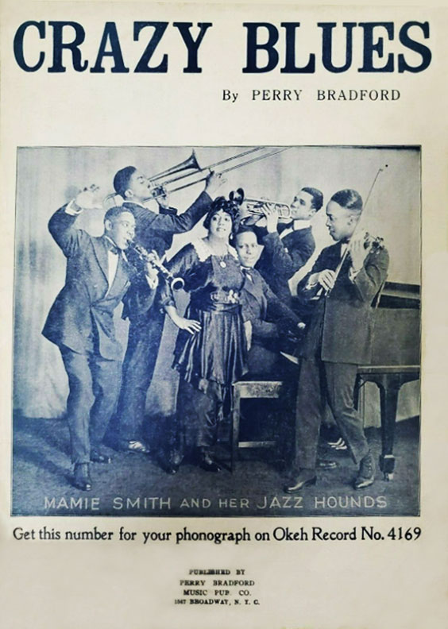
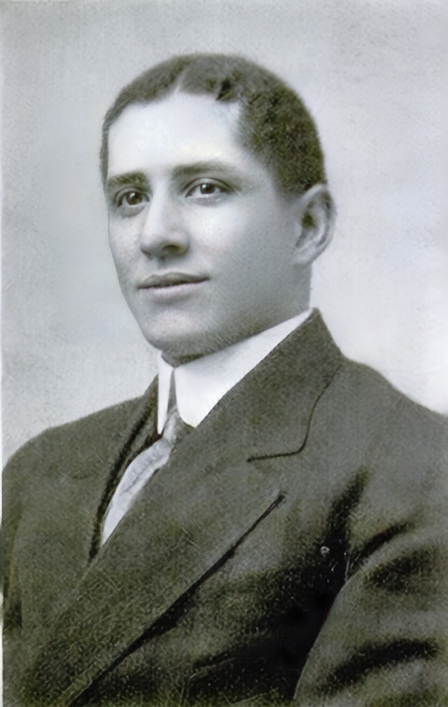

Hearing the Americas
A Timeline of Popular Music and Recording Technology in the Era of Acoustic Recording, 1890-1925

Thomas Edison invents the phonograph
The phonograph was the first audio recording device, and was invented by Thomas Alva Edison (1847-1931). The machine would mechanically record sound on a rotating cylinder, initially covered in thin foil, and would then play the sound back. It took over a decade for the phonograph to be available for purchase. By the early twentieth century, recording cylinders were made of wax or shellac.

Gramophone invented
German inventor Emil Berliner (1851-1929) first patented his recording device, the gramophone, in 1887. Instead of using recording cylinders, like Edison's phonograph, the gramophone used discs to record and play sounds and music.

"Stroh" violin patented for use in acoustic recording sessions
The "Stroh" violin was designed with a large horn affixed to its side in order to be more easily picked up by recording mechanisms in early sessions.
Victor Records sends scouts to Mexico City
From almost the beginning of the recording era, the big companies hoped to open new markets abroad by recording music that would appeal to local consumers. In 1903, the Victor Talking Machine Company sent record “scouts” to Mexico City to record local musicians. This marks the first time Victor sent recording scouts to Latin America.

Bert Williams records “Nobody”
In the early twentieth century, minstrel shows were one of the most popular forms of entertainment in the US, Europe, and Latin America. Early minstrel shows featured white actors in “blackface,” portraying racist tropes of stereotypically offensive black characters. Eventually, African Americans themselves began to appear in “blackface,” with makeup, performing the same kinds of stereotypical tropes. Minstrel songs, themes, and performance styles show up everywhere in the earliest recorded popular music, like in Bert Williams’s released his song 1906 song “Nobody.”

Wikimedia Commons
Victrola is introduced
New Jersey's Victor Talking Machine Company introduced the "Victrola" to the consumers in 1906. The patented internal horns were housed in decorative cabinets, which made match the user's home decor, looking more like furniture and less mechanical.

National Archives and Records Administration via Wikimedia Commons.
James Reese Europe founds the Clef Club
James Reese Europe established the Clef Club, a booking agency and informal union for black musicians in New York. Clef Club musicians were hired to play various styles of music, from ragtime tunes to classical music, often for white audiences.

Wikimedia Commons
Memphis Blues
The ”blues” fad erupted in 1912 with the publication of the sheet music for W.C. Handy’s composition the ”Memphis Blues.” While the blues started as musical form steeped in the complex histories of African American field calls and folk music, and was then appropriated and used in minstrel shows, the genre went on to have an enormous influence on many of the most iconic genres of the twentieth century -- jazz, country, and rock and roll.

Victor and Columbia record calypso
The first recordings of popular music from the British Caribbean were made in 1912, when Victor and Columbia recorded Lovey’s String Band, a group from Trinidad then on tour in the United States. When those records sold well, Victor sent Cheney and Althouse to Port of Spain to record more Trinidadian music. They made 83 recordings on the trip, including the two calypso records on the right, which were released in time for the 1915 carnival season.

Wikimedia Commons
Tango fad explodes in Paris
Beginning in 1913, the Tango became a major phenomenon in Paris. The music and the dance were made to seem exotic in order to appeal to European and North American audiences. The tango was an influential element in the transnational popular musical milieu during the first two decades of the history of recording, informing developments in the United States, Brazil, and the Caribbean.

Frank and Helen Ferera sign with Columbia records
Hawaiian Music was introduced to the world stage at the 1915 Panama-Pacific International Exposition in San Francisco which led to the genre’s global popularity. Native Hawaiian musician Frank Ferera performed at the event and subsequently signed a record contract with Columbia Records, with his wife Helen. Hawaiian musicians had developed a very distinctive style using the ukulele and lap-guitar technique that would be extremely important to popular music worldwide.
First Samba recording produced in Brazil
The Brazilian singer Manuel Pedro dos Santos, known as Baiano, recorded “Pelo telefone” (“On the Telephone”) for Casa Edison on behalf of Odeon Records. Baiano describes the song as a "carnival samba" in his spoken introduction to the recording. As a result, "Pelo telefone" became known as the first samba, even though it lacks the beat we now associate with the genre.

First Son recording produced in Cuba
In 1917, Columbia Records brought a group of musicians from Oriente Province in Eastern Cuba to Havana to record a few sides. These recordings have been lost, but the group, renamed the Sexteto Habanero Godínez, recorded for Victor the following year. The band specialized in son, a genre that featured a rhythmic pattern known as clave (performed on an instrument called claves) and that quickly became the dominant form of Cuban popular music.

First jazz recording produced
“Livery Stable Blues,” recorded in Victor Records’ New York studios by the all-white Original Dixieland Jass Band, is usually considered the first jazz record. A 12-bar blues, the song was a novelty number featuring a chorus in which horns bleated like barnyard animals. But the record helped make a national craze out of a New Orleans musical style created largely by African American musicians such as Buddy Bolden and Kid Ory.

Carlos Gardel records the tango song "Mi noche triste"
Although tango had been recorded earlier, Carlos Gardel’s version of “Mi noche triste” (“My Sad Night”), inaugurated a new genre of tango song. The record established the melodramatic lyrics, the use of Buenos Aires slang words, and the emotional vocal delivery that would remain characteristic of this genre for decades.

Wikimedia Commons
First electrical recordings are made by scientists at Bell Labs
Scientists at Bell Labs, having invented the condenser and carbon microphone, set out to improve how sound was recorded. In 1920, they developed electric recording technologies. Instead of using a bell, like Edison’s phonograph, a microphone would convert sound into an electrical signal that was amplified and used to actuate the recording stylus. The first commercial electrical recording was made by Leopold Stokowski and the Philadelphia Orchestra for Victor. By the mid 1920s, electrical amplification and microphones had made it possible to dramatically improve recording quality. Compared to acoustic recordings, electrical recordings had less mechanical noise and captured lows and highs better.

Mamie Smith’s Crazy Blues
The history of the blues took a significant turn in 1920 when the African American songwriter Perry Bradford convinced the owner of OKeh Records to record the Black vaudeville singer Mamie Smith. The A-side of Smith’s record, “Crazy Blues,” proved surprisingly popular among Black record buyers, opening the floodgates to so-called “race records.” Over the next two decades, virtually every record company followed OKeh’s lead, issuing thousands of recordings by Black artists, largely for the African American market.

Harry Pace establishes Black Swan Records
Harry Pace established the first race-conscious record company, Black Swan, which aimed to share and celebrate set the wealth of musical talent in the African American community. Black Swan found its first big star in Ethel Waters and her recording of “Down Home Blues.”

Vernon Dalhart records “Wreck of the Old 97”
Country Music was born when record companies decided to sell artists like Vernon Dalhart as authentic representatives of the musical traditions of poor, rural white people. Dalhart’s ballad “The Wreck of the Old 97” is considered by many to be the first country music single. Furthermore, this song represents the shift from the acoustic recording era to the electric.